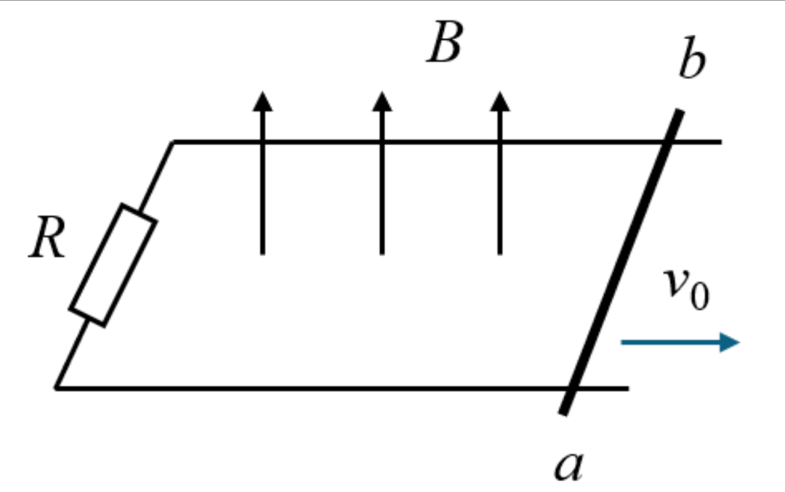
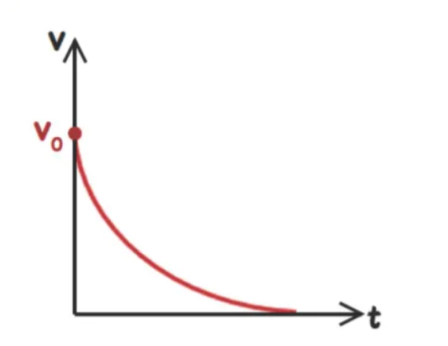
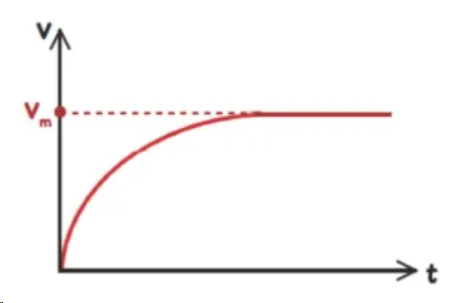
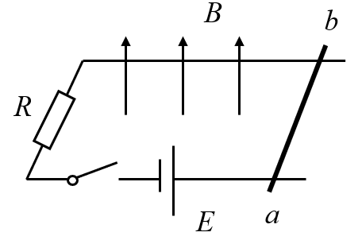
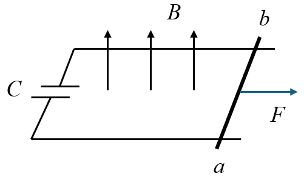

高中物理 · 电磁感应 · 导体棒平动/转动切割 —— 电路 · 动力学 · 能量
单棒切割是电磁感应中最经典、最常考的模型：一根导体棒在磁场中运动，棒两端产生感应电动势，与外电路构成闭合回路。
💡 本页为自由学习模式，所有小节都能直接查看；每节底部配小测验，仅作自我检测。
高考中"单棒在磁场中运动"可以按"棒本身是否提供电源"与"外电路是电阻还是电容"分成几类。下面把最常见的四类拎出来，先建立整体印象。
运动分析：
随着速度减小，安培力减小，加速度也减小——这是加速度减小的减速运动。最终速度趋近于 0，棒静止。


能量规律：导体棒的初动能全部转化为电阻 $R$ 上的焦耳热，即
动量规律：安培力的冲量等于杆的动量变化量，即
又因为 $q=\dfrac{\Delta\Phi}{R}=\dfrac{BLx}{R}$，可进一步求出全过程棒的位移 $x=\dfrac{mv_0R}{B^2L^2}$。
棒从静止出发，初始速度小，安培力小，$F>F_\text{安}$，加速；随着速度增大，安培力 $F_\text{安}=\dfrac{B^2L^2v}{R+r}$ 增大，加速度减小。最终 $F=F_\text{安}$，加速度为零，速度达到最大收尾值 $v_m$。

如果是竖直下落（只受重力），收尾速度 $v_m=\dfrac{mg(R+r)}{B^2L^2}$；如果是光滑斜面下滑，则 $v_m=\dfrac{mg\sin\theta\,(R+r)}{B^2L^2}$。
导轨回路中串入电动势为 $E$ 的电源（方向使棒向右加速）。闭合开关后，电源提供电流，棒在磁场中受安培力向右运动。棒一旦运动，又产生反向感应电动势 $E_\text{感}=BLv$，削弱回路电流。

电流随速度增大而减小，安培力减小，加速度减小。当 $BLv_m = E$ 时，回路电流为零，安培力为零，棒以
匀速运动。全过程电源输出的电能转化为棒的动能。
电容器并联在导轨两端，外力 $F$ 水平向右拉棒。棒运动时切割产生电动势 $E=BLv$，给电容充电，电容器两端电压 $U_C$ 随 $v$ 增大而升高。

若回路电阻可忽略，则 $U_C = BLv$。电容器电荷量 $Q_C = C\,U_C = CBLv$，于是回路电流
对棒列牛顿第二定律：
整理得
| 模型 | 电路特征 | 运动特征 |
|---|---|---|
| 电容 + 单棒 + 有初速度 | 电容跨接导轨，棒有 $v_0$，无电源无外力 | 棒减速，电容充电；最终电流为零，$U_C=BLv_\text{末}$，棒以 $v_\text{末}$ 匀速（若有电阻则最终停下） |
| 充电/放电式电容 + 电源 + 单棒 + 外力 | 先由电源给电容充电，再接入导轨；或电容与电源、导轨、棒组成回路 | 电容放电提供电流，棒受安培力加速；同时棒切割产生反电动势，最终 $U_C=BLv_\text{末}$ 时电流为零，系统趋于稳定 |
长为 $L$ 的导体棒，以速度 $v$ 垂直切割磁感应强度为 $B$ 的匀强磁场，棒两端产生的感应电动势为
适用条件：$B$、$L$、$v$ 三者两两垂直。若速度方向与棒不垂直，取垂直于棒的分速度 $v_\perp$。
长为 $L$ 的导体棒绕其一端、以角速度 $\omega$ 在垂直磁场平面内转动，棒上各点线速度不同，平均速度为 $\dfrac{\omega L}{2}$，故
弯曲导体或斜放导体切割时，$L$ 取导体两端点在垂直速度方向上的投影距离（即"参与切割的有效长度"）。
棒作电源，电动势 $E=BLv$，全电路总电阻为 $R+r$（$R$ 为外电阻，$r$ 为棒电阻），则感应电流
通电导体棒在磁场中受安培力，大小为
方向由左手定则判定，结果总是阻碍导体棒的相对运动（楞次定律的"阻碍"在力学上的体现）。
棒受外力 $F_\text{牵}$、安培力 $F_\text{安}$、摩擦力 $f$、重力分量等，加速度为
其中 $F_\text{安}=\dfrac{B^2L^2v}{R+r}$，$v$ 越大，安培力越大，加速度越小——这是变加速过程。
当 $a=0$ 时速度达到最大（收尾）值 $v_m$。常见两类：
| 情景 | 受力平衡式 | 收尾速度 $v_m$ |
|---|---|---|
| 水平导轨，恒力 $F$ 拉，无摩擦 | $F = F_\text{安}$ | $v_m = \dfrac{F(R+r)}{B^2L^2}$ |
| 光滑斜面，恒力 $F$ 沿斜面 | $F = mg\sin\theta + F_\text{安}$ | $v_m = \dfrac{(F-mg\sin\theta)(R+r)}{B^2L^2}$ |
| 竖直下落，只受重力（无外力） | $mg = F_\text{安}$ | $v_m = \dfrac{mg(R+r)}{B^2L^2}$ |
解：收尾时 $F=F_\text{安}=BIL=\dfrac{B^2L^2v_m}{R}$，故 $v_m=\dfrac{FR}{B^2L^2}=\dfrac{0.5\times1}{1^2\times0.5^2}=2\,\text{m/s}$。
电流 $I=\dfrac{BLv_m}{R}=\dfrac{1\times0.5\times2}{1}=1\,\text{A}$，热功率 $P_\text{热}=I^2R=1^2\times1=1\,\text{W}$（等于拉力功率 $Fv_m=0.5\times2=1\,\text{W}$）。
通过回路某截面的电荷量 $q = \bar I\,\Delta t$，其中平均电流 $\bar I = \dfrac{\bar E}{R+r} = \dfrac{\Delta\Phi}{(R+r)\Delta t}$，故
$x$ 为棒在垂直磁场方向的位移。由此得位移与电荷量的关系：
导体棒在磁场中运动，外力（或其他力）做功，一部分转化为棒的动能，另一部分克服安培力做功转化为焦耳热。
棒绕一端转动，线速度从 0 线性增大到 $\omega L$，取平均 $v_\text{均}=\dfrac{\omega L}{2}$：
若棒绕距一端 $a$ 处转动（两端到轴距离 $a$、$b$），则 $E=\dfrac12 B\omega(a^2+b^2)$。
| 导体形状 | 有效长度 $L_\text{有效}$ |
|---|---|
| 直棒，速度垂直棒 | 棒长 $L$ |
| 弯折导体（∠ 形） | 两端点在垂直速度方向投影的距离 |
| 棒与速度成 $\theta$ 角 | $L\sin\theta$ |
| 圆形线圈一边切割 | 切割边在垂直速度方向投影 |
| 棒不全在磁场内 | 磁场内部分的长度 |
A. 棒做匀减速运动 —— 错：安培力 $F_\text{安}=\dfrac{B^2L^2v}{R}$ 随 $v$ 减小而减小，加速度减小，为变减速。
B. 棒最终静止 —— 对：安培力持续阻碍运动，动能全部转化为焦耳热。
C. 全过程产生焦耳热 $Q=\dfrac12 mv_0^2$ —— 对：动能全部转化为热。
D. 通过电阻的电荷量 $q=\dfrac{BLx}{R}$ —— 对：由 $q=\dfrac{\Delta\Phi}{R}=\dfrac{BLx}{R}$。
答案：BCD
解：稳定时 $F=F_\text{安}=\dfrac{B^2L^2v_m}{R}\Rightarrow v_m=\dfrac{FR}{B^2L^2}$。
拉力功率 $P=Fv_m=\dfrac{F^2R}{B^2L^2}$，且等于热功率 $I^2R$。